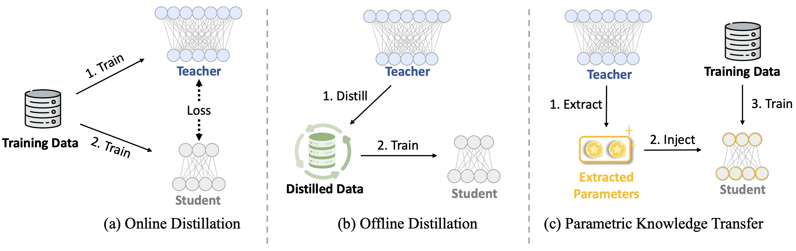
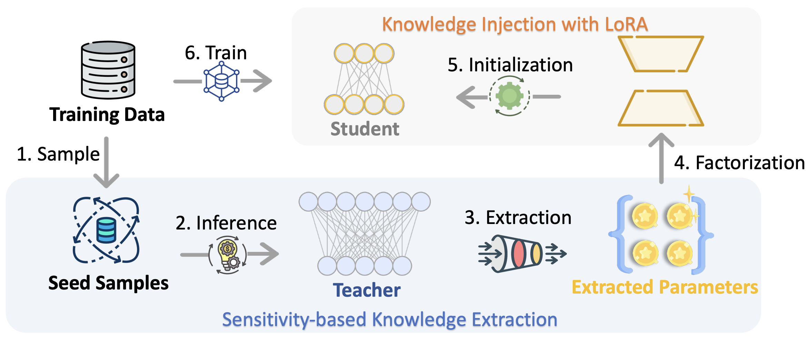
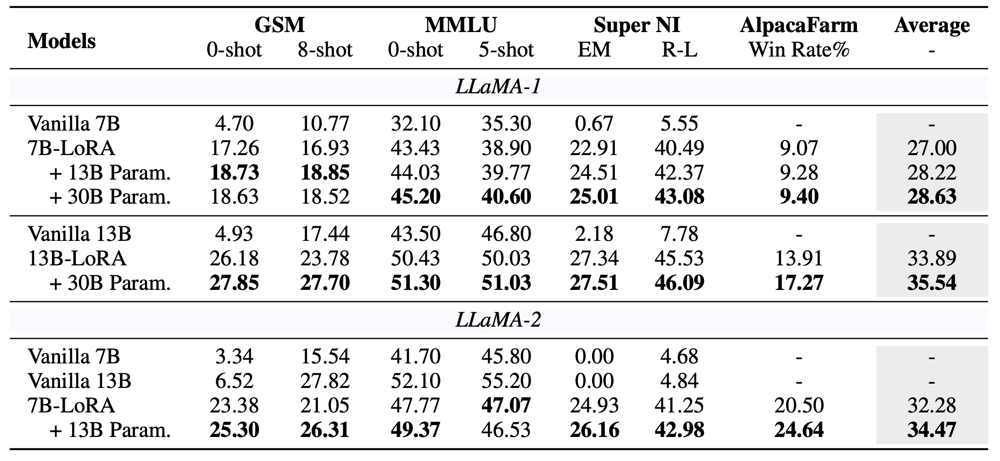
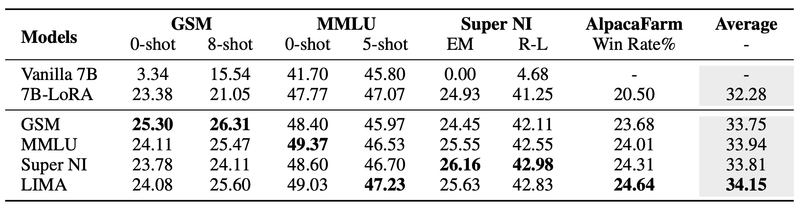
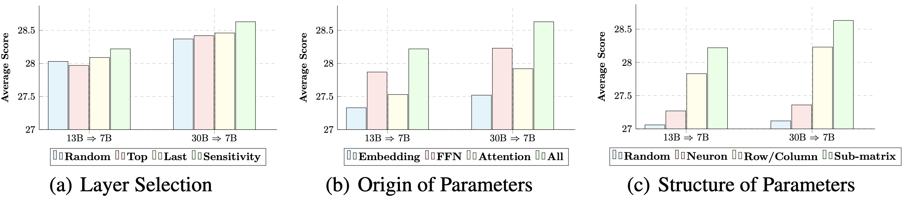

@article{zhong2023seeking,
title={Seeking Neural Nuggets: Knowledge Transfer in Large Language Models from a Parametric Perspective},
author={Zhong, Ming and An, Chenxin and Chen, Weizhu and Han, Jiawei and He, Pengcheng},
journal={arXiv preprint arXiv:2310.11451},
year={2023}
}